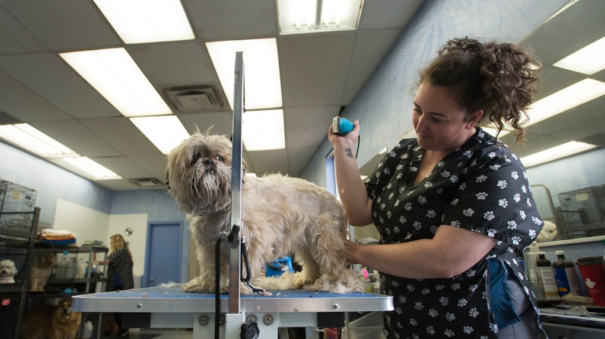
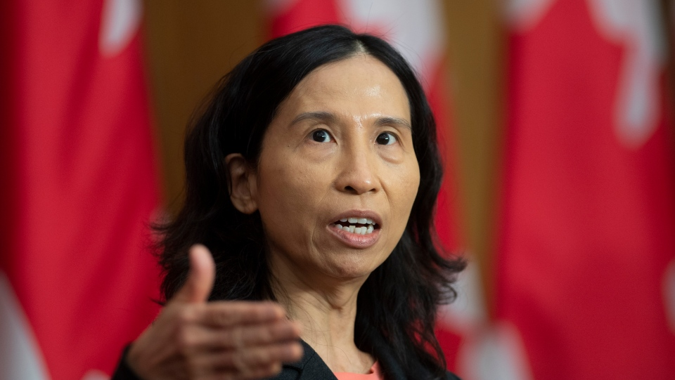

Ontario allows pet grooming businesses to reopen with restrictions

TORONTO -- Ontario is giving pet grooming businesses the green light to reopen Thursday after they were forced to close more than a month ago.
Read the full story on CTV news
Tam urges provinces not to loosen COVID-19 restrictions as Quebec hints at changes

Canada's top doctor warned provinces against easing stringent public health measures Saturday, just as the premier of one of the provinces hardest hit by the COVID-19 pandemic said he hoped to do exactly that in a little over a week.
Read the full story on CTV news